Le plastiquedu quartier équipevotre ASC.
Talentri collecte les bouteilles et les sachets autour des terrains avec les ASC, les transforme à Thiès et les rend sous forme de buts, de cônes, de bancs et d'haltères.
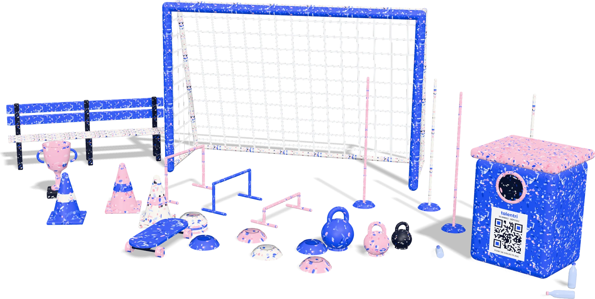
rapporte des points à l'ASC
fabriqués à Thiès
Après le coup de sifflet final, le terrain reste couvert de plastique.
Pendant les navétanes, les stades et les rues qui les entourent se remplissent de sachets d'eau et de bouteilles. Ce plastique finit brûlé, enfoui ou emporté vers la mer. Dans le même temps, les jeunes jouent sans équipement, parce qu'il coûte trop cher.
de déchets plastiques produits chaque année au Sénégal.
Conseiller technique du Premier ministre, cité par Le Soleil, janvier 2026seulement sont recyclés, soit environ 30 000 tonnes.
Même sourceASC de quartiers et de villages affiliées à l'ONCAV.
Président de l'ONCAV, cité par l'APS, août 2025Quatre étapes, du caniveau au terrain.
L'ASC fait ce qu'elle sait faire : mobiliser son quartier. Talentri s'occupe du reste.
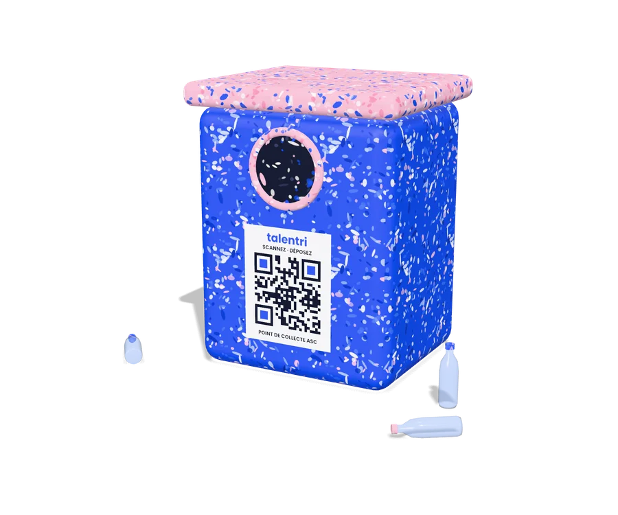
L'ASC demande son point de collecte
Une demande en ligne, et nous lui attribuons un bac et un code QR unique.
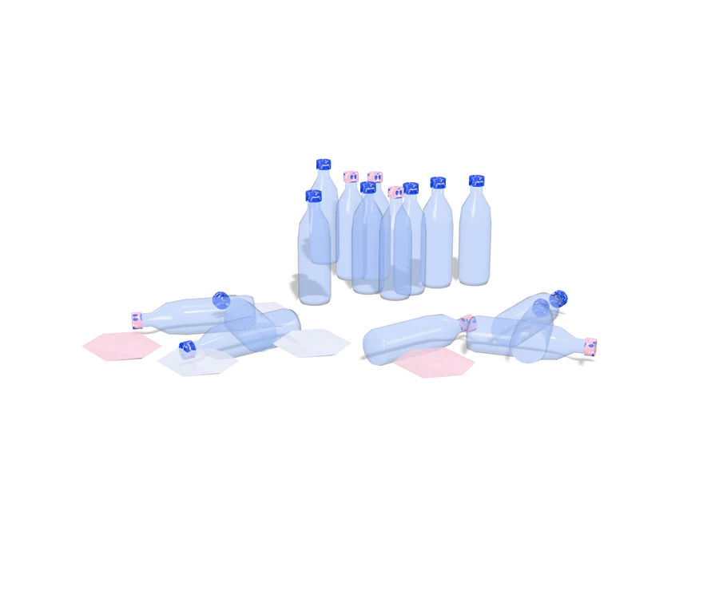
Le quartier dépose son plastique
Chaque semaine, le dépôt est pesé et enregistré en scannant le code QR.
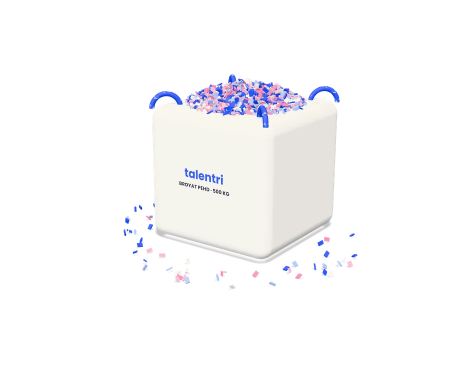
Nous broyons et transformons
À l'atelier de l'École Polytechnique de Thiès, le plastique devient broyat, plaques et profilés.
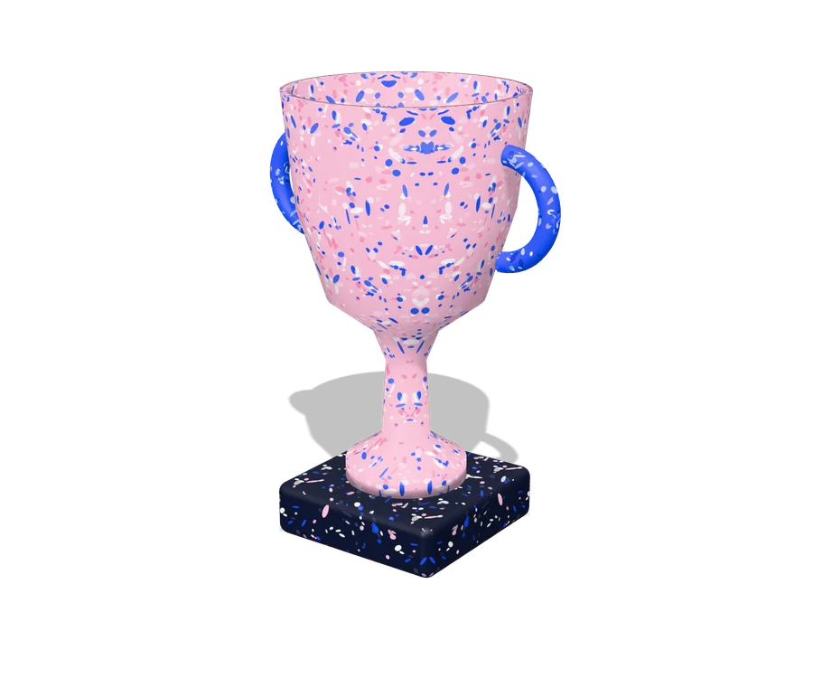
L'ASC reçoit ses équipements
Plus le quartier recycle, plus son ASC est équipée. Le classement est public.
Chaque ASC suit ses kilos, semaine après semaine.
Le code QR relie chaque dépôt à une ASC et à une commune. Le tableau de bord montre le poids recyclé, le rang dans la zone et l'équipement que le quartier est en train de gagner.
Zone 3, Thiès
Ce que devient votre plastique.
Vingt-quatre objets modélisés. Choisissez-en un et faites-le tourner.
Un même plastique, cinq débouchés.
La vente du broyat et des produits finis finance les équipements offerts aux ASC et fait vivre l'atelier.
Des équipements gagnés en recyclant
Buts, cônes, haies, bancs de touche, panneaux de basket, haltères. Tout ce qu'il faut pour s'entraîner sans attendre un sponsor.
Pavés et bancs publics
Du mobilier urbain durable, fabriqué avec les déchets de la commune.
Tables-bancs
Deux places, sans entretien, qui ne craignent ni l'eau ni les termites.
Plastique broyé
Du broyat trié par type de plastique pour les industriels du recyclage.
Mobilier
Tabourets, étagères et tables aux couleurs uniques.
Le même terrain, sans le plastique.
Faites glisser le curseur.
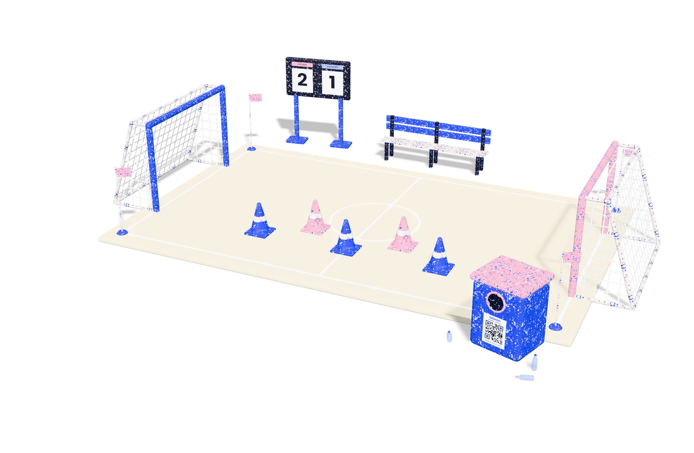
Illustrations 3D
Au stade comme dans la rue, rien par terre.
Gardez votre sachet
Un sachet d'eau vide tient dans une poche jusqu'au point de collecte.
Videz, écrasez, déposez
Une bouteille écrasée prend trois fois moins de place dans le bac.
Ne brûlez jamais
Le plastique brûlé dégage des fumées toxiques pour tout le quartier.
Faites gagner votre ASC
Chaque dépôt scanné compte pour l'équipe de votre quartier.
C'est le temps qu'une bouteille en plastique peut mettre à se dégrader dans la nature. Quelques semaines suffisent pour en faire un cône d'entraînement.
Estimation de la NOAA, agence américaine d'observation océanique et atmosphérique
Inscrivez votre ASC et recevez votre code QR.
Remplissez la demande. Nous installons le point de collecte avec vous avant le prochain match.
Version de démonstration : la demande est enregistrée sur cet appareil uniquement.
Ce code identifie votre point de collecte.
Affichez-le sur le bac : chaque dépôt scanné sera compté pour votre ASC.
À Thiès, la transformation a déjà commencé.
À l'École Polytechnique de Thiès, l'atelier fabrique déjà des pavés, du mobilier et des profilés en plastique recyclé.
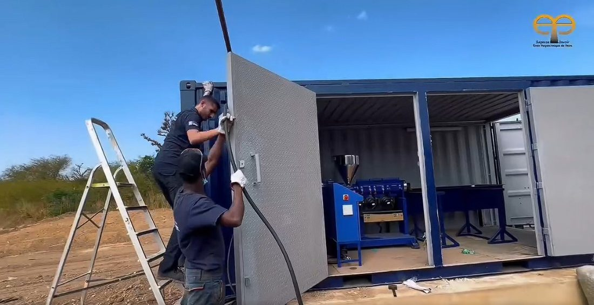
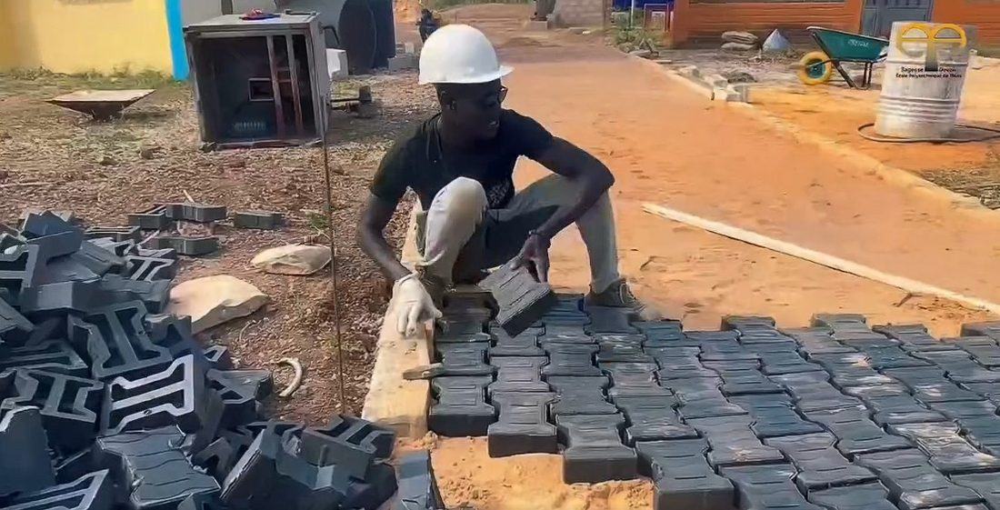
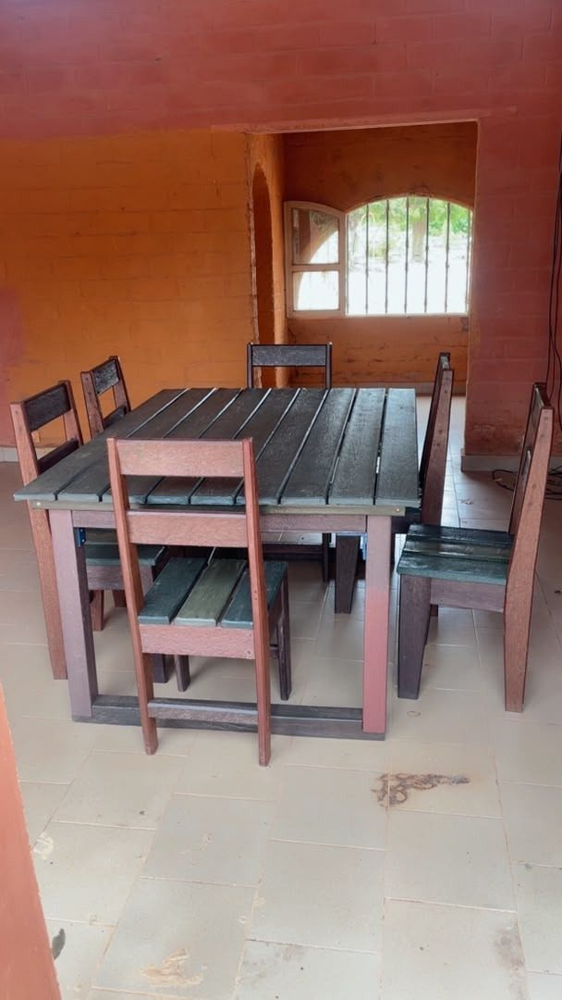
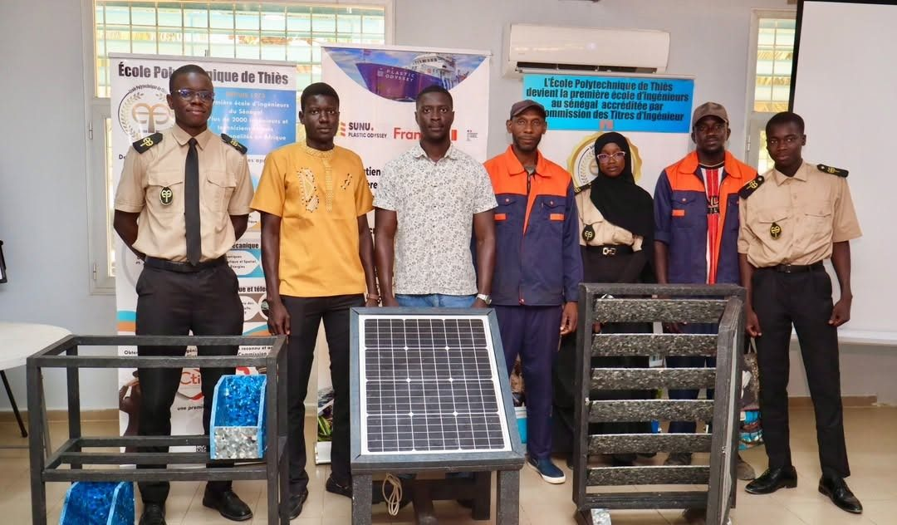
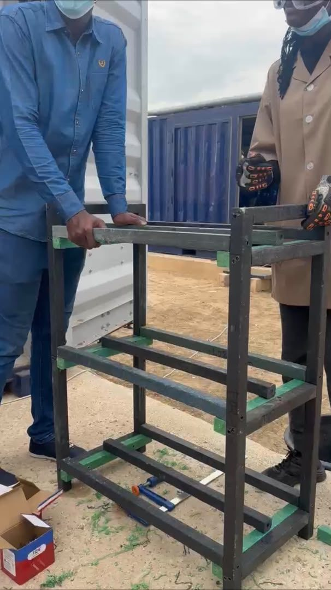
Un projet né à Thiès.
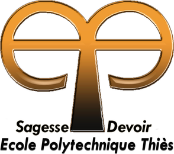
Atelier de transformation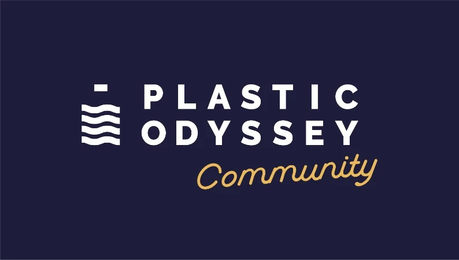
Machines et accompagnement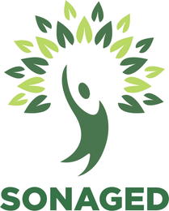
Points de collecteSources des chiffres : Le Soleil via AllAfrica, 29 janvier 2026 (déchets plastiques et recyclage) · APS via AllAfrica, août 2025 (nombre d'ASC) · NOAA Marine Debris Program (durée de dégradation). Les images du site sont des modélisations 3D réalisées pour le projet.